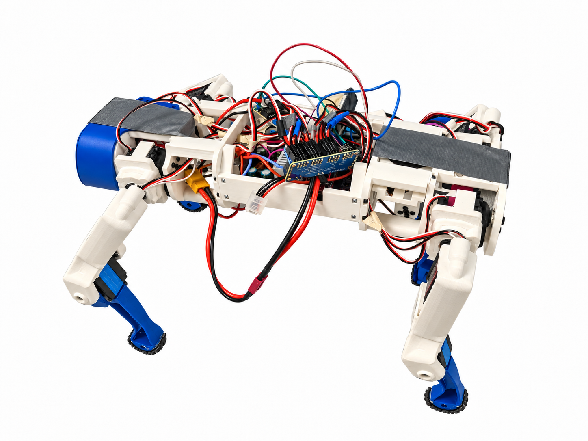

TE Connectivity
Designed 224G connector and test hardware in Creo and completed GD&T, statistical tolerance analysis, preliminary release work, fixture work, and an automation RFQ.
View internship projectsSeeking full-time Mechanical Engineering roles · Available Feb 2027
Mechanical design, product development, and mechatronics.
I’m completing a B.S. in Mechanical Engineering with a Mechatronics minor at Penn State. My work includes connector design, test fixtures, robotics, and engineering analysis.

My robotics project
I integrated and calibrated this four-legged robot’s electronics and developed its pitch and roll leveling controller. On hardware, it adjusts its legs to respond to a tilting surface.
Read the project and hardware testsThe illustration below shows the leg-mixing logic used in this robot’s controller. Choose a side of the board to raise, then watch the legs and equations change.
When one side of the board rises, the robot shortens the legs on that side and extends the opposite legs. Enable JavaScript to try the interactive illustration.
Engineering portfolio
These projects cover professional mechanical design, mechatronics, physical prototyping, and thermal analysis.
Professional background
Internships in connector product development and mechanical reliability.
Designed 224G connector and test hardware in Creo and completed GD&T, statistical tolerance analysis, preliminary release work, fixture work, and an automation RFQ.
View internship projectsDesigned vibration-fixture hardware, supported qualification testing, analyzed torque failures, and improved reliability-reporting workflows.
View internship projectsMore engineering work
Additional work in assistive technology, qualification hardware, and dynamic-system modeling.
Contact